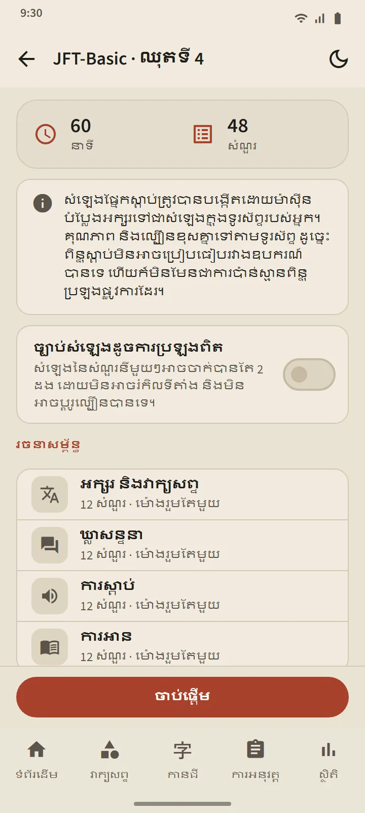
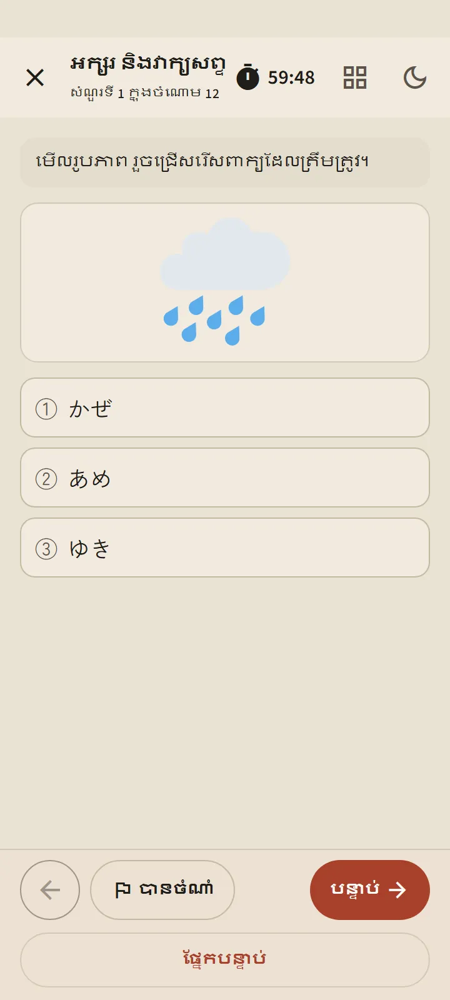
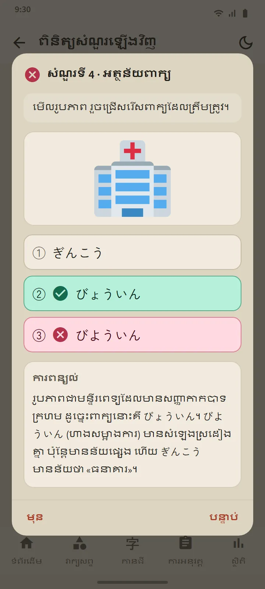

កម្រិតប្រាំមួយ ឈុត 24
កាតកម្រិតនីមួយៗក្នុងផ្ទាំង «ការអនុវត្ត» បើកទំព័រកម្រិត៖ ប៊ូតុង «ចាប់ផ្ដើម» ក្រឡាឈុតដែលមានលេខរៀង និងប្រវត្តិ។ ពេលធ្វើគ្រប់ឈុតរួច ការហាត់ចម្រុះ នឹងបើក ដោយដាក់សំណួរដែលអ្នកមិនធ្លាប់ឃើញឱ្យនៅមុនគេ។ ឈុតថ្មីៗមកដល់តាមរយៈការអាប់ដេតកម្មវិធី។
| ការប្រឡង | ឈុត | សំណួរក្នុងមួយឈុត | ពេលវេលា |
|---|---|---|---|
| JFT-Basic | 8 | 48 | 60 នាទី |
| JLPT N5 | 8 | 68 | 90 នាទី |
| JLPT N4 | 2 | 85 | 115 នាទី |
| JLPT N3 | 2 | 102 | 140 នាទី |
| JLPT N2 | 2 | 107 | 155 នាទី |
| JLPT N1 | 2 | 101 | 165 នាទី |


ទម្រង់សំណួរធ្វើតាមការប្រឡងពិត
សំណួរ JFT-Basic ប្រើជម្រើសបី (បួនក្នុងផ្នែកវេយ្យាករណ៍) ស្ថានភាព និងសំណួរជាភាសារបស់អ្នករៀន និងមានរូបភាពក្នុងសំណួរជាច្រើន ដូចសំណួរគំរូផ្លូវការ។ សំណួរ JLPT ប្រើជម្រើសបួន ហ្វុរីហ្កាណាដែលសមនឹងកម្រិត និងអត្ថបទអានដែលមានទម្រង់ចម្រុះ៖ រឿងខ្លី កំណត់ចំណាំ សេចក្ដីជូនដំណឹង សារ អ៊ីមែល និងតារាងព័ត៌មាន។ ឈុតនីមួយៗត្រូវបានត្រួតពិនិត្យមុនពេលចេញផ្សាយ ហើយគ្មានសំណួរផ្លូវការណាមួយត្រូវបានចម្លងទេ។
មុនពេលអ្នកចាប់ផ្ដើម អេក្រង់ត្រៀមបង្ហាញរចនាសម្ព័ន្ធរបស់ឈុតនោះ៖ ផ្នែក ចំនួនសំណួរ និងពេលវេលា។ ពេលវេលាធ្វើតាមការប្រឡងពិត៖ ពេលរួមតែមួយក្នុង JFT-Basic និងពេលដាច់ដោយឡែកតាមផ្នែកក្នុង JLPT។ ពេលអ្នកបន្តទៅផ្នែកបន្ទាប់ ផ្នែកមុននឹងបិទ ដូចនៅក្នុងបន្ទប់ប្រឡងដែរ។ អ្នកអាចចំណាំសំណួរដែលមិនប្រាកដ ចាកចេញបណ្ដោះអាសន្ន (នាឡិកានៅតែដើរ) ហើយបន្តវិញពីផ្ទាំង «ការអនុវត្ត»។


ស្តាប់ដោយសំឡេងជប៉ុនក្នុងទូរស័ព្ទរបស់អ្នក
អត្ថបទនៃសំណួរស្តាប់ត្រូវបានអានដោយម៉ាស៊ីនបំប្លែងអក្សរទៅជាសំឡេងភាសាជប៉ុនក្នុងទូរស័ព្ទរបស់អ្នក ដោយប្រើសំឡេងផ្សេងគ្នាសម្រាប់អ្នកនិយាយម្នាក់ៗ។ ជម្រើសចម្លើយគ្រាន់តែឮ មិនបង្ហាញជាអក្សរទេ ដូចក្នុងការប្រឡងពិត ហើយ JFT-Basic និង N5 ប្រើជម្រើសជារូបភាព។ កុងតាក់ «ច្បាប់សំឡេងដូចការប្រឡងពិត» កំណត់ចំនួនដងនៃការចាក់ឱ្យត្រឹមអ្វីដែលការប្រឡងពិតអនុញ្ញាត៖ ពីរដងក្នុង JFT-Basic និងមួយដងក្នុង JLPT។
ដោយសារសំឡេងចេញពីទូរស័ព្ទនីមួយៗ គុណភាពខុសគ្នាពីឧបករណ៍មួយទៅឧបករណ៍មួយ។ បើទូរស័ព្ទមិនទាន់មានសំឡេងភាសាជប៉ុន កម្មវិធីបង្ហាញរបៀបដំឡើង ហើយផ្នែកស្តាប់ត្រូវបានរំលងរហូតដល់មានសំឡេងនោះ។

លទ្ធផលលើមាត្រដ្ឋានផ្លូវការ រួចការពន្យល់សម្រាប់គ្រប់សំណួរ
លទ្ធផល JFT-Basic ត្រូវបានគូរលើបន្ទាត់ 10–250 ដែលមានសញ្ញាត្រង់ 145, 175 និង 200 ជាមួយឈ្មោះកម្រិតរបស់វា គឺ A1, A2.1 និង A2.2 ព្រមទាំងប្រាប់ថាកម្រិតនីមួយៗប្រើសម្រាប់អ្វីក្នុងការប្រឡងពិត។ លទ្ធផល JLPT បង្ហាញផ្នែកដាក់ពិន្ទុនីមួយៗធៀបនឹងពិន្ទុអប្បបរមារបស់វា ព្រោះក្នុងការប្រឡងពិត ផ្នែកតែមួយដែលក្រោមពិន្ទុអប្បបរមា មានន័យថាធ្លាក់។ ទាំងពីរមានភាគរយត្រូវតាមផ្នែក និងតាមប្រភេទសំណួរ។
ប៊ូតុង ពិនិត្យសំណួរឡើងវិញ បើកគ្រប់សំណួរជាមួយចម្លើយរបស់អ្នក ចម្លើយត្រូវ និងការពន្យល់ ហើយសំណួរស្តាប់ក៏បង្ហាញអត្ថបទរបស់វាដែរ។ ការពន្យល់មានជា 12 ភាសា។ ប្រវត្តិរបស់កម្រិតនីមួយៗរក្សាទុកការហាត់ចុងក្រោយៗរបស់អ្នក ហើយក្រាហ្វពិន្ទុស្ថិតនៅក្នុងផ្ទាំង «ស្ថិតិ»។
ពិន្ទុទាំងនេះគឺជាការប៉ាន់ស្មានសម្រាប់តាមដានវឌ្ឍនភាព មិនមែនជាការទស្សន៍ទាយលទ្ធផលផ្លូវការរបស់អ្នកទេ។


ឥតគិតថ្លៃ និង Premium
គ្រប់ឈុតបើកក្នុងកំណែឥតគិតថ្លៃ។ បន្ទាប់ពីអ្នកចុច «ចាប់ផ្ដើម» ការហាត់លើកបន្ទាប់នៅកម្រិតនោះត្រូវបានចាក់សោរយៈពេល 7 ថ្ងៃ ចំណែកកម្រិតផ្សេងទៀតនៅតែបើក ហើយប្រវត្តិ និងការពន្យល់មិនដែលត្រូវបានចាក់សោឡើយ។ ក្នុងពេលចាក់សោ អ្នកអាចបើកការហាត់បន្ថែមមួយដងដោយមើលការផ្សាយពាណិជ្ជកម្ម។ Premium គ្មានការផ្អាកទេ។ ការផ្សាយពាណិជ្ជកម្មមិនដែលបង្ហាញលើអេក្រង់សំណួរឡើយ សម្រាប់អ្នកប្រើគ្រប់រូប។